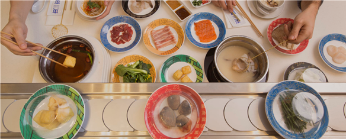

Tạm gác những bộn bề của cuộc sống, để dành trọn vẹn những khoảnh khắc tuyệt vời bên gia đình và bạn bè thông qua những hoạt động, trải nghiệm được lấy cảm hứng từ đất nước Mặt trời mọc.
Hướng đến việc kết nối cộng đồng, tạo dựng các giá trị văn minh, hiện đại, mỗi cư dân đều sẽ được tận hưởng những tiện ích chất lượng, môi trường sống an ninh 24/24, vun đắp nền tảng vững chắc cho tương lai.
"Lối sống chuẩn phong cách nhật"
TIỆN ÍCH ĐA CHỨC NĂNG
TRUNG TÂM VĂN HÓA GIẢI TRÍ YOKO
Quần thể phức hợp tiện ích Yoko Clubhouse đem đến phong cách sống đa trải nghiệm cùng đặc quyền sống đẳng cấp dành riêng cho cư dân Takara Residence.
Onsen Spa
Onsen sử dụng thuỷ liệu pháp đặc trưng của giới quý tộc Nhật Bản, mang đến sự thư giãn hoàn hảo, làm trẻ hóa cơ thể và phục hồi sức khỏe.
Hồ nước khoáng nóng nhân tạo là nơi thích hợp để thư giãn, giải toả những mệt mỏi đồng thời giúp thu nạp dòng năng lượng sảng khoái cho cơ thể
Hồ Bơi Nước Tràn Ruri
Thả mình vào làn nước tươi mát cùng mảng không gian xanh yên bình tại hồ bơi ngoài trời để tận hưởng cảm giác thư giãn, nghỉ dưỡng tuyệt vời.
Công Viên Nyoko
Công Viên Chủ Đề Nyoko tái hiện những biểu tượng tinh hoa của nền văn hoá xứ sở Mặt trời mọc với cổng trời Torii, hoa Sakura, tiểu đình, đèn lồng... Đây chính là nơi lý tưởng để khám phá nét văn hoá nhân văn của đất nước Nhật Bản.

Vườn Hoa Haruko
Khu Vườn Haruko - tiện ích sinh thái độc đáo, thể hiện chuẩn mực của nghệ thuật sắp đặt và nghệ thuật sân vườn, tạo nên không gian đậm phong thái “Zen” - tịnh tâm và yên bình.
Công viên santoso
Công Viên Santoso được ươm mầm dựa trên triết lý phong thuỷ tương sinh thuỷ mộc. Thổi hồn vào nghệ thuật sắp đặt để mang đến sự an yên, tĩnh lặng và không gian thiên nhiên lý tưởng cho các thế hệ trong gia đình. Đặc biệt với khu tập dưỡng sinh dành cho ông bà giao lưu cộng đồng nâng cao sức khoẻ.

Cờ Cá Chép Koinobori
Cờ đón gió truyền thống mang hình dạng cá chép – biểu tượng của sự bản lĩnh, tính kiên định và hoài bão. Lễ hội cờ Cá chép vào các ngày lễ thiếu nhi vừa tạo ra hoạt động vui chơi cho trẻ em vừa hiện thực hóa câu chuyện tuổi thơ.
Hồ Cá Koi
Hồ Cá Koi mang sắc màu Nhật Bản đặc trưng, nằm trong tiểu cảnh khu vườn Haruko, không chỉ góp phần tạo cảnh quan mà còn đem đến sự may mắn, thành công, thịnh vượng cho cư dân.

Trung tâm thương mại Shibuya

Trung tâm thương mại Shibuya với không gian được thiết kế độc đáo mô phỏng khu trung tâm mua sắm nổi tiếng nhất Tokyo, Nhật Bản. Nơi đây chính là “trái tim thấu hiểu” mọi nhu cầu của cư dân tại Takara Residence; nơi tích hợp những dịch vụ mua sắm, ăn uống và hoạt động vui chơi giải trí hiện đại với những thương hiệu đẳng cấp quốc tế.
Khu Phố Ẩm Thực Yatai
Mang đậm nét đặc trưng của ẩm thực đường phố Nhật Bản, phố ẩm thực Yatai là sự xuất hiện mới lạ, hứa hẹn mang đến những trải nghiệm mỹ vị độc đáo và là khu phố nhộn nhịp về đêm.
Khu Phố Ẩm Thực Kimochi
Thưởng thức ẩm thức tinh tuý Á - Âu ngay trong Phố ẩm thực Kimochi. Khu ẩm thực đa văn hóa là quần thể ẩm thực được kết hợp từ nhiều vùng miền trên khắp cả nước và thế giới.
Lẩu Shabu Shabu
Nhà hàng lẩu Shabu Shabu đem đến phong vị đặc trưng của đất nước Mặt Trời Mọc. Món lẩu truyền thống thanh vị, tốt cho sức khoẻ với sự hòa quyện của những nguyên liệu phong phú.